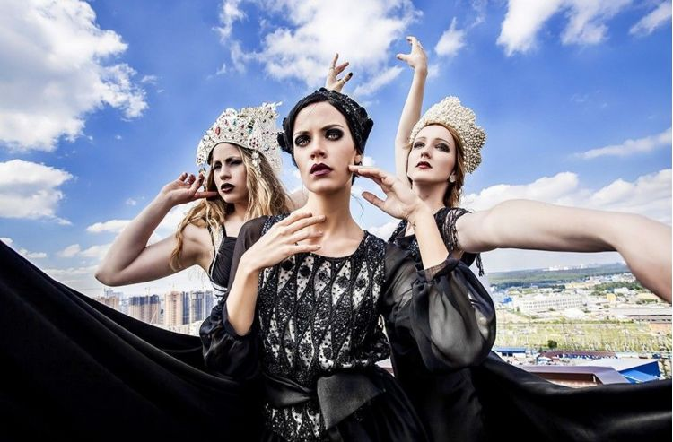

«Твоя игра»
Этим летом бельгийская театральная команда Ontroerend Goed и импресарио Федор Елютин (ранее привезший в Москву спектакль-променад по городу Remote) представили Москве новый индивидуальный интерактивный опыт для одного человека «Твоя игра». Длится спектакль порядка 30–35 минут и идет в универмаге «Цветной». A Game of You — так спектакль называется в оригинале — уже был сыгран на театральных фестивалях в Эдинбурге и Авиньоне, но российская версия отличается тем, что дело происходит не в арт-кластере или здании театра, а в оживленном торговом центре.
«Самый волнительный спектакль сезона… это вы», — гласит сайт проекта. И действительно, вряд ли можно придумать более быстрый способ взглянуть на себя глазами другого человека и понять, каким вы кажетесь окружающим.
«Черный русский»
В сентябре этого года один из главных театральных ньюсмейкеров последнего времени Максим Диденко и театральная компания Ecstàtic представили Москве первый иммерсивный мюзикл по неоконченному роману А.С. Пушкина «Дубровский». Пространство старинного московского особняка Спиридонова превратилось в дом Троекурова, где появились свой бальный зал, столовая, cпальня, купальня, кабинет, хлев и даже лес. Всех зрителей в начале спектакля делят на три группы, которые следуют разными маршрутами за героями спектакля, и выдают соответствующие маски — сов, оленей и лис.
По словам создателей спектакля, «Черный русский» — это прежде всего спектакль ощущений, воздействующий на зрителя на уровне всех органов чувств. Так, в хлеву пахнет свежескошенным сеном, на кухне — блинами и мясом, в спальне Маши Троекуровой — цветами. Зрителей угощают черными пельменями, травяными настойками и прочими яствами.
«Москва-2048»
«МСК 2048» — это новая масштабная игра в реальности от знаменитой сети квестов «Клаустрофобия» и режиссера «Гоголь-центра» Александра Созонова. «МСК 2048» развивает концепцию иммерсивного променад-театра, соединяющего в себе ролевую игру, театр-променад и квест. Сюжет разворачивается в мире, пережившем глобальную катастрофу, все игроки — беженцы, желающие поскорее перебраться из радиоактивных пустошей в Большую Москву. Для прохода в город необходима виза, получить которую можно в пропускном пункте убежища.
Трудно придумать лучший способ ощутить себя героем видеоигры «в реале»! «МСК 2048» полностью стирает барьеры между актерами и зрителями, сценой и зрительным залом, игровыми условностями и реальной жизнью. Игроки становятся главными действующими лицами собственных уникальных историй, выполняя задания актеров, — исход игры зависит от каждого.
«Русские сказки»
«Русские сказки» — спектакль-променад от Александра Созонова и Ильи Шагалова, поставленный по русским народным сказкам из знаменитого собрания Афанасьева. Идут «Сказки» в «Гоголь-Центре». Больше года артисты провели в экспедиции по стране, чтобы посмотреть, чем живет Русь, и послушать живой народный язык. В результате получился живой иммерсивный спектакль-променад, соединяющий в себе разные жанры — этюды, наблюдения, фантазии молодого актерского поколения на тему русских сказок, философские притчи, баллады, серенады, романсы, бардовские песни, рок и рок-н-ролл.
«Русские сказки» идут по всему театру одновременно. Перед началом спектакля зрители выбирают свою дорогу из предложенных трех — есть три группы зрителей, три выверенных пути и три разных впечатления от просмотра. В финале все соединяются в большом зале, эпилог у «Русских сказок» единый.

Кочеткова Анастасия 917 группа ДВГУПС